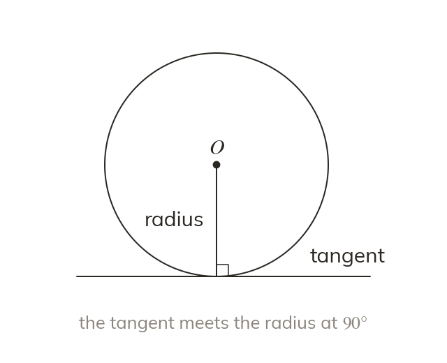
A tangent meets the radius at
A tangent is perpendicular to the radius drawn to its point of contact. So the angle between them is always
A bicycle wheel meets the road at a single point, and the spoke to that point stands straight up from the road. That right angle between a tangent and a radius unlocks a whole family of problems.
Work down the page at your own pace. Write every answer in your book first, then click to check it.
Read each card, then follow the worked examples one step at a time.

A tangent is perpendicular to the radius drawn to its point of contact. So the angle between them is always
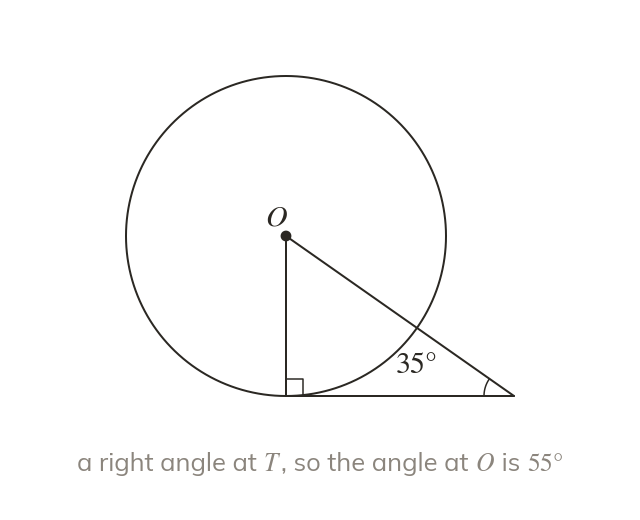
Join the centre to a point on the tangent. The triangle has its right angle at the point of contact. Angle facts or Pythagoras then find what is missing.
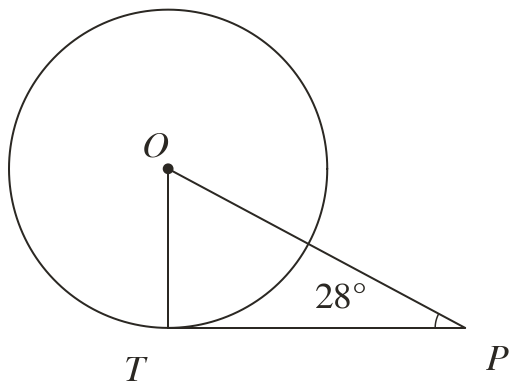
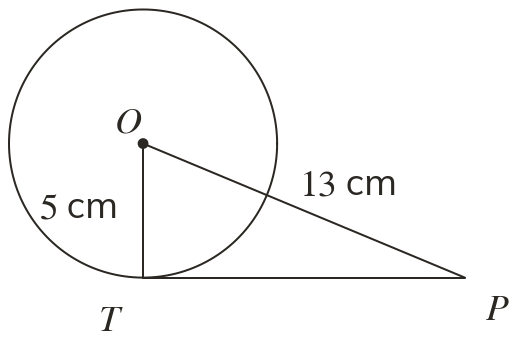
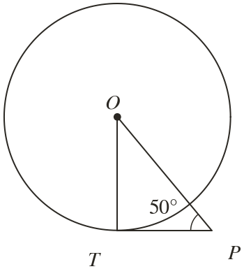
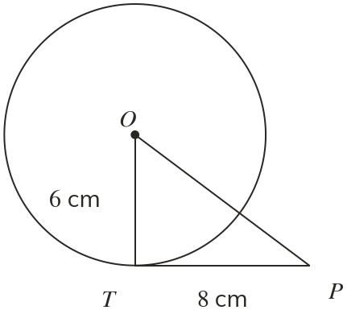
Pick an answer. If it's wrong, the feedback tells you which mistake it was.
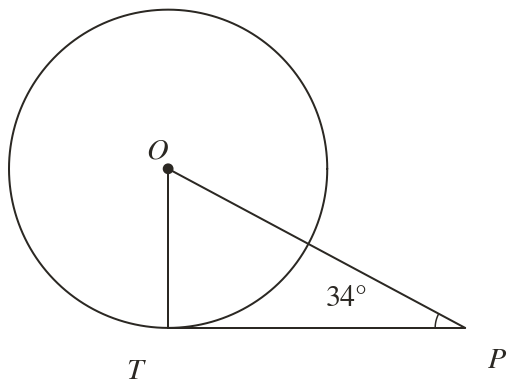
Read each card, then follow the worked examples one step at a time.
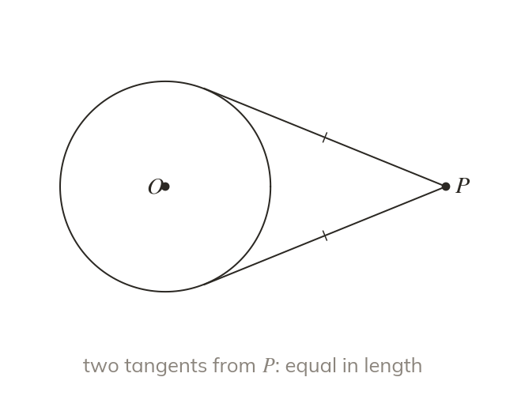
From a point outside a circle exactly two tangents can be drawn. They are equal in length.
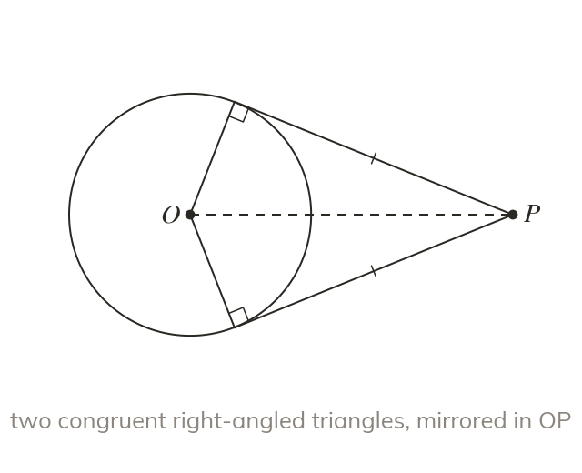
The radii and OP make two congruent right-angled triangles. They mirror each other in OP.
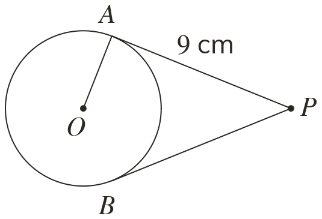
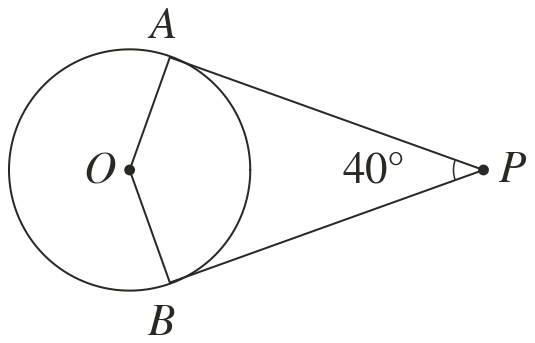
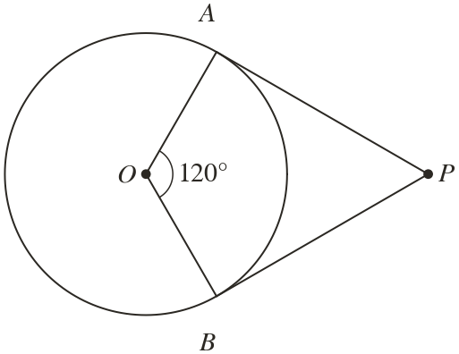
Pick an answer. If it's wrong, the feedback tells you which mistake it was.
Finished? Next lesson: 10.16.6 Chords and the Centre.
Log in, then search for a code to practise that skill.